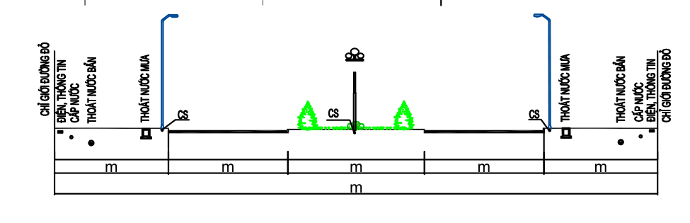

Ký hiệu theo loại đồ án
Chọn một hàng để mở atlas theo đúng tỷ lệ. Số bên phải là số mục sử dụng đất trong danh mục.
KIẾN TRÚC / QUY HOẠCH / ĐỊA CHÍNH
Từ nhãn thửa đất đến mặt cắt đường phố. Tra mẫu ký hiệu, đọc đúng tỷ lệ và đối chiếu bản vẽ gốc.

Chọn một hàng để mở atlas theo đúng tỷ lệ. Số bên phải là số mục sử dụng đất trong danh mục.
THƯ VIỆN BẢN ĐỒ / PHỤ LỤC I
Chọn cấp đồ án, tỷ lệ và giai đoạn để tra layer, Index Color và hatch theo Phụ lục I của Thông tư 16/2025/TT-BXD. Khi lập bản đồ đo đạc thửa đất, mở bộ ký hiệu địa chính.
| Loại đất | Index | Mẫu theo giai đoạn |
|---|
ĐO ĐẠC ĐỊA CHÍNH / PHỤ LỤC 22
Tra ranh giới, nhãn thửa và công trình theo Thông tư 26/2024/TT-BTNMT. Khi thể hiện chức năng sử dụng đất trong đồ án, mở atlas quy hoạch.
| Đối tượng | Cách đọc ký hiệu | PDF gốc |
|---|
CÔNG CỤ QGIS
Trong QGIS, mở Plugins → Manage and Install Plugins → Install from ZIP rồi chọn gói tải về. Công cụ chuyển mã văn bản chạy trực tiếp bên dưới.
ASTRYX / REACT
Tra API của từng component và lệnh dùng trong terminal.
CAD / CƠ SỞ DỮ LIỆU
15 block cấp nước theo ba giai đoạn ở trang 51, ba lớp ranh giới ở trang 5 và các lớp đất 1/500. Hình học được dựng lại từ PDF, kích thước chèn cần hiệu chỉnh theo bản vẽ.
Tải DWG · Tải DXF
Ghép số hiệu với tên tiếng Việt viết hoa không dấu. Ví dụ
QH05-SO DO DINH HUONG PHAT TRIEN KHONG GIAN.dwg.
Bảng lớp tham khảo tại Phụ lục II ghi
CongtrinhCapNuocPCCC_P cho điểm và
CongtrinhCapNuocPCCC_A cho vùng. Chọn đúng bộ dữ liệu
hiện trạng hoặc quy hoạch, đối chiếu nội dung PCCC với cấp độ đồ án.
Đường tuyến dùng polyline liên tục. Vùng có biên khép kín. Đối tượng điểm dùng block có điểm chèn phù hợp với hình dạng ký hiệu. Đặt thuộc tính thể hiện theo layer.
Phụ lục I · trang 1Đối chiếu bố cục, ký hiệu chung và toàn bộ bảng hạ tầng kỹ thuật trong PDF gốc.
Bố cục · trang 3 · Hạ tầng · trang 43Điều 1 khoản 7 Thông tư 43/2025/TT-BXD cập nhật thuật ngữ tại Mục 7 Phụ lục I và Phần 2, Phần 3 Phụ lục II. Hai PDF đính kèm là bản ban hành năm 2025.
Đọc Công báoSỔ TAY / THỰC HÀNH
Bắt đầu từ sản phẩm cần lập. Cùng một vị trí có thể xuất hiện trên bản đồ địa chính và bản vẽ quy hoạch với hai chú giải khác nhau.
ĐO ĐẠC ĐỊA CHÍNH
QUY HOẠCH ĐÔ THỊ VÀ NÔNG THÔN
THƯ VIỆN GIS.VN
BÀN GIAO HỒ SƠ